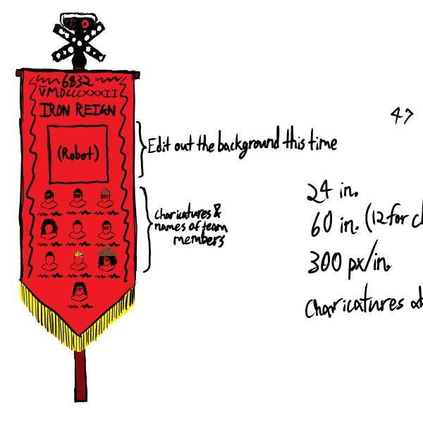
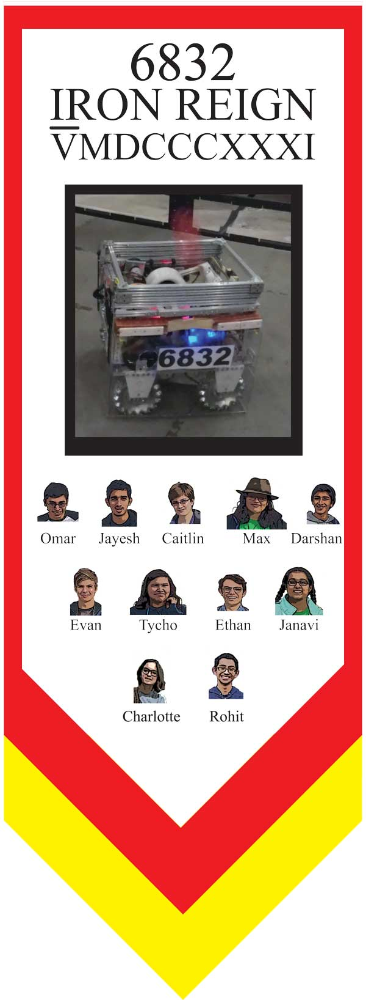

For the past year or two, we've brought along a big vertical banner to our competitions to help boost our presence and make it easier for judges, other teams, and even members of our own team to find us in the pits or on the field. But the banner we've been using has become outdated: Since last year, members have come and gone, we've decided on a different visual theme, and, of course, we've built an entirely new robot. The time has come to begin again.
We plan to use the same banner stand as last time (although we've dyed it red to match the helmets) to conserve materials, so the banner will have the same dimensions as before. Since we have the same amount of canvas to work with, the design will also incorporate the same components as the last version:
With some spare time between meetings, I made a draft layout for the banner in Microsoft OneNote. The previous version wasn't much more than some pictures we found and a couple text boxes thrown onto a plain white background, so I wanted to make this banner look like more thought and effort had been put into its design than last year's. I decided on a red background with black and gold trim designs to better match the Roman theme we're going for, with the team number and name at the top, the robot's picture in the middle, and a grid of our team members at the base. To make it all fit together more smoothly, I also planned to get a green-screened picture of the robot and to make individual charicatures instead of pictures for each team member. See if you can determine who's who in the team pictures on the draft version.
 (there's a picture of it here kbye)At the next meet, the team decided that the layout was good to go, so I got to work making a neater version in Adobe Illustrator. With the design complete, you can see how the complete banner looks in Adobe Illustrator below. It'll take a special printer to make it in the correct size, and we'll have to wait a little longer to get access to it, but all in all it should be smooth sailing from now on.
 (aw dayum that's a bootyful banner if i do say so myself)The choice to use charicatures of the team members this year on the banner as opposed to a team photo (like we used last year) was one of the most impactful decisions to be made about the subject, but I think that it was the right judgement. Hopefully this can play at least a small part in establishing our presence among the many teams that we will encounter in regionals (and perhaps beyond), but only time will tell how effective the banner can be in competition.